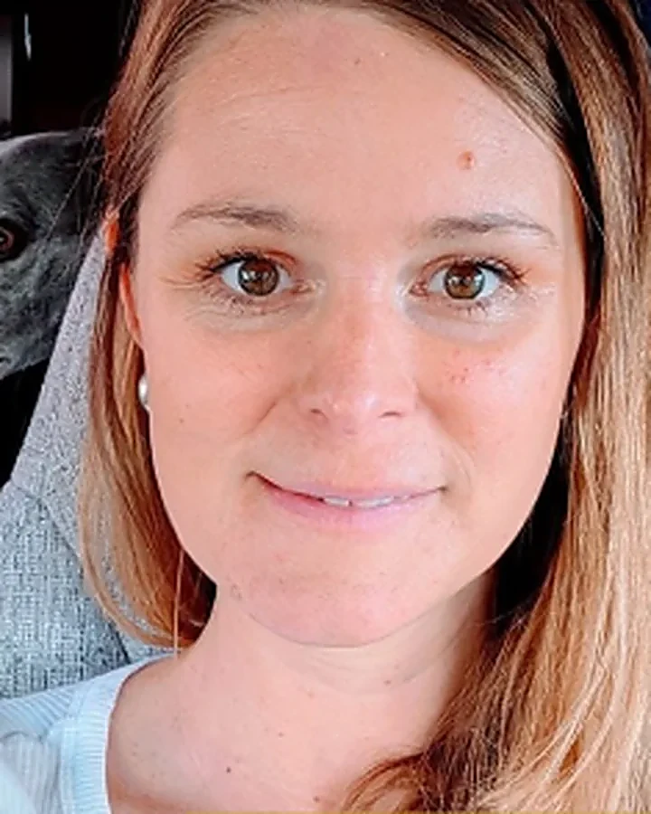

★★★★★Downloaded by over 1,000 OTsBuilt by a former OT, for OTs
Beki Eakins · Former OT, North Wales
Sarita made $21,550 AUD within her first launch, 4 months into the programmeShaenelle hit $10k USD months in month 5, and $14k in month 6 of the programmeNicola made £6000 with her nature-based coaching programme in 6 monthsIvan sold his first offer within 3 weeks, and made $25,000Sascha makes 2-4 times her NHS employee income, whilst working lessMel developed a Burnout programme and has since made over $20kMichelle signed her first client within 3 weeks and then secured enough further clients to leave her day job!Ellie got to $15,000 AUD per month within 5 monthsKelsey had a $35k launchBethany doubled her OT income in 6 monthsAlex replaced her OT wage within 9 monthsSharon sold her first offer in just one social media postBrad made $6000 AUD within the first 4 monthsAnna made £4000 in her first 4 monthsSarita made $21,550 AUD within her first launch, 4 months into the programmeShaenelle hit $10k USD months in month 5, and $14k in month 6 of the programmeNicola made £6000 with her nature-based coaching programme in 6 monthsIvan sold his first offer within 3 weeks, and made $25,000Sascha makes 2-4 times her NHS employee income, whilst working lessMel developed a Burnout programme and has since made over $20kMichelle signed her first client within 3 weeks and then secured enough further clients to leave her day job!Ellie got to $15,000 AUD per month within 5 monthsKelsey had a $35k launchBethany doubled her OT income in 6 monthsAlex replaced her OT wage within 9 monthsSharon sold her first offer in just one social media postBrad made $6000 AUD within the first 4 monthsAnna made £4000 in her first 4 months
Why this exists
You are not short of skills. You are short of a starting point.
I am Beki, former Occupational Therapist and now Business and Lifestyle Coach. I left the profession in 2019 to travel the world, build my business and to support a freedom-based life.
I spent years trying to create a freedom style business before I hit on a model that worked. I did the notes, the caseloads and the capped pay bands. Now I teach other OTs to do the same.
The problem was never that you lacked expertise. It was that nobody showed you how to package it.
You've got years of skill and a quiet feeling there's more you could do with it. You haven't started yet, and that's fine. Most OTs I work with began exactly here, with a job, a rota and an idea they hadn't said out loud.
Your next step: Turn one thing you already know into a simple offer, alongside your job, without changing your job.
You did the brave bit. You work for yourself and your diary is full. The catch is that your income is tied to your hours, so the only way to earn more is to work more, and you're already tired.
Your next step: Package what you already know into something that earns without another session in the diary.
You've built a practice and a team, which most OTs never do. But it still runs through you. The questions, the decisions and the hardest cases all come back to your desk.
Your next step: Get your expertise out of your head and into something packaged, so the business earns and runs without you in every room.
You've already done what most OTs only talk about: you have your practice and you've started something online. Now it needs to sell steadily, not only when you push it.
Your next step: A simple, repeatable way to sell what you've already built.
“In terms of the investment I made in your course, I've made like 10 times that back. So that's been a very, very worthwhile financial investment and it continues to pay off.”

SaritaOT, in her own words
“The most obvious one now is that I'm making sales. My parent coaching program is selling and that feels great. May has been my greatest income month yet.”
AngelaOT, in her own words
“I like making money monthly with my business, it's thriving. People are coming to me asking for services, not what I expected to happen in just six short months.”
Occupational therapist turned online business coach. I built my own business from the clinical skills I already had, while still working, and I have since taken more than a hundred OTs through the same first step.
I am not a generic business coach who found a niche. I did the notes, the caseloads and the capped pay bands. I made a decision that I wanted more from life and work than the system allowed me. I created my own path, with time freedom and now teach others to do the same.
Everything here is built for OTs and OTPs specifically. It respects your training rather than asking you to start from nothing.
Can Occupational Therapists start an online business?
Absolutely! More OTs (OTPs) than ever are transitioning online, using skills they already have to create high-ticket coaching, consulting, and education-based offers. With the right strategy, you can build a profitable online OT business that provides financial freedom, flexibility, and deeper impact - without burning out in traditional healthcare systems.
Do I need a website to start my online OT business?
No! In fact, building a website too early can slow you down. Most successful OTs start by validating their idea and securing clients through organic social media marketing and direct outreach .
Inside our programmes, we teach high profit actions - this will save you years in wasted time on pointless tasks.
What if I don’t have a business idea yet?
That’s exactly what we help with! Many OTs we work with start with no idea, just a desire for change. We guide you through the process of:
- Uncovering your niche based on your skills and passions - Validating your offer so you know it will sell before launching - Building confidence in sales, marketing, and entrepreneurship
You don’t need all the answers before you start, you just need a strategy.
How long does it take to start making money with an online OT business?
Many of my clients sign their first high-ticket clients within 4-11 weeks of starting my programme. Some have even left their jobs entirely within months!
Your success depends on: - Your commitment to learning & implementing strategies - Your willingness to show up and take action - Following a proven system instead of trying to figure it out alone
Our 1:1 OT Freedom Collective programme is designed to accelerate your journey so you can start seeing results fast .This is the programme that clients have the fastest results on.
What happens if I am unhappy with the service?
There is always a 14-day money back guarantee, meaning you have sufficient time to explore the programme. Please also feel free to discuss any personal requirements that you feel could be improved as I value feed back and this is a continuously improving service.